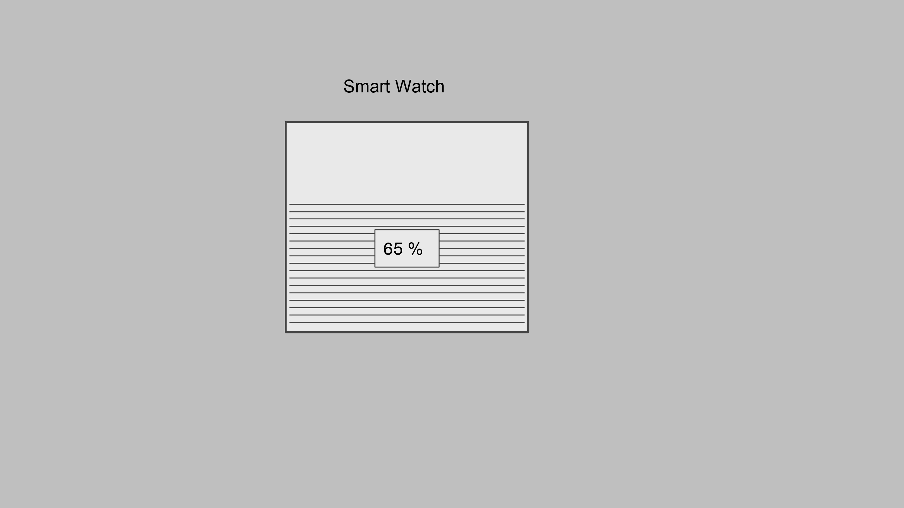
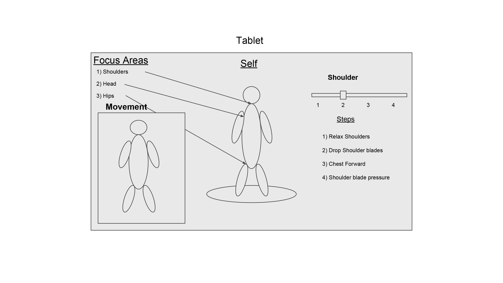
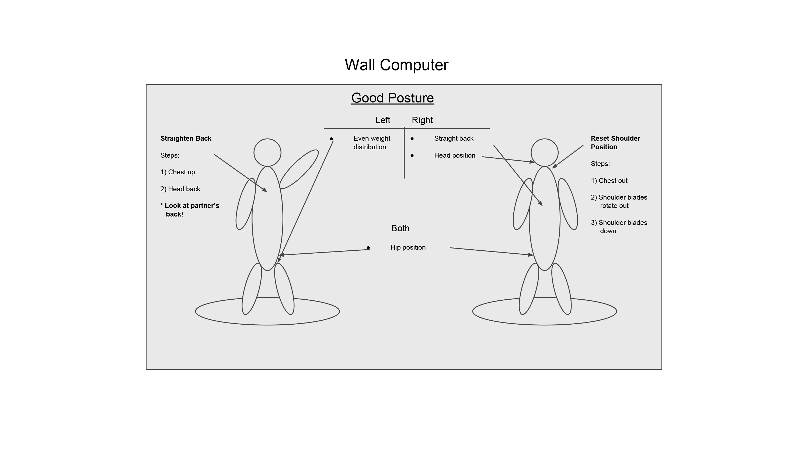

Persona: Jasper recently dislocated his shoulder, and it is due to strength issues related to bad posture. He wants to be more cognizant of his posture, and more easily receive feedback on the motions of getting into better posture.
Video:
PDF:


